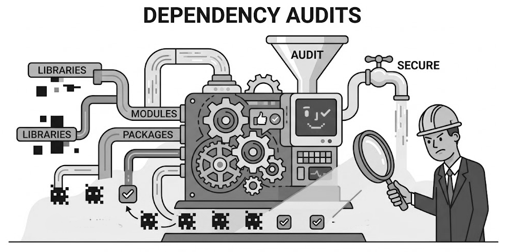

DependencyAudits.jl

Audit source code dependencies for the correctness of the files listed in Project.toml. Useful to assist in creating a Project.toml for an existing code, since $reportaudit$ will suggest lines to be placed in Project.toml and report packages used but not included in your .toml file.
Example:
julia> using DependencyAudits
julia> cd("my code directory")
julia> audit = auditdependencies()
julia> auditreport(audit)
Functions Reference
DependencyAudits.add_toplevel_module!DependencyAudits.auditdependenciesDependencyAudits.auditreportDependencyAudits.cliplastDependencyAudits.extract_from_expr!DependencyAudits.extract_modules_from_file!DependencyAudits.finddependenciesDependencyAudits.finddependencyusesDependencyAudits.latestversionDependencyAudits.packagestringsDependencyAudits.registeredversionsDependencyAudits.stdlibnamesDependencyAudits.uuidofDependencyAudits.versionof
DependencyAudits.add_toplevel_module! — Method
add_toplevel_module!(arg, modules::Set{Symbol})Extract the single top-level module name from one argument of a using / import expression. Relative imports (leading dots) are ignored.
DependencyAudits.auditdependencies — Function
auditdependencies(dirpath::AbstractString = ".";
projectpath = nothing,
exclude = ["test", "docs", "benchmark", ".git"],
include_extras::Bool = false,
include_weakdeps::Bool = false)::NamedTupleCompare the modules actually referenced by Julia source files with the dependencies declared in Project.toml (or JuliaProject.toml).
Arguments
dirpath– root of the project tree to scan.projectpath– explicit path to the project file; whennothingthe function looks forProject.tomlorJuliaProject.tomlunderdirpath.allowmissingtoml– whether to allow missing Project.toml files (default:true).- allowmissingtoml::Bool=true,
exclude– directory basenames that are skipped while walking the tree.include_extras– also treat entries under[extras]as declared.include_weakdeps– also treat entries under[weakdeps]as declared.shortenversions– whether to shorten version numbers in TOML snippet (default:true).
Returns
A named tuple with the fields
| field | meaning |
|---|---|
projectpath | absolute path of the project file that was read |
declared | sorted vector of declared dependency names |
used | sorted vector of modules found in source |
unused | declared but never referenced |
undeclared | referenced, neither declared nor a stdlib |
stdlibs | referenced standard-library modules |
uses | Dict{Symbol,Vector{String}} of module → files |
tomltext | text made from the dependencies vector for use |
if needed for adding to a Project.toml file |
The function reads, but does not modify the Project.toml file.
DependencyAudits.auditreport — Method
auditreport(audit; io::IO = stdout)Print a human-readable summary of the result returned by auditdependencies.
DependencyAudits.cliplast — Method
cliplast(s::AbstractString)::StringRemove the last dot-separated component from a string, if it has two or more components.
DependencyAudits.extract_from_expr! — Method
extract_from_expr!(ex, modules::Set{Symbol})Walk an Expr produced by JuliaSyntax / Base and collect top-level module names from using / import statements.
DependencyAudits.extract_modules_from_file! — Method
extract_modules_from_file!(filepath, modules::Set{Symbol})Parse a Julia source file and add every top-level module name that appears in a using or import statement to modules.
DependencyAudits.finddependencies — Function
finddependencies(dirpath::AbstractString = ".";
exclude = ["test", "docs", "benchmark", ".git"])::Vector{Symbol}Recursively scan dirpath for Julia source files (.jl) and return a sorted vector of the top-level module names that appear in using / import statements.
Relative imports (those beginning with .) are ignored. Directories listed in exclude (matched by basename) are skipped.
DependencyAudits.finddependencyuses — Function
finddependencyuses(dirpath::AbstractString = ".";
exclude = ["test", "docs", "benchmark", ".git"])
::Dict{Symbol,Vector{String}}Recursively scan dirpath for Julia source files and return a dictionary mapping each imported top-level module to the list of files (relative to dirpath) in which it appears.
DependencyAudits.latestversion — Method
latestversion(name; includeremoved=false) -> Union{VersionNumber, Nothing}Return the latest version of package name found in the REGISTRY, or nothing if no versions are found. includeremoved controls whether removed versions are considered. Will look up
DependencyAudits.packagestrings — Method
packagestrings(pkgname::AbstractString)Return a named tuple containing name, UUID, and latest version of the package pkgname found in the global registry, without downloading it.
DependencyAudits.registeredversions — Method
registeredversions(name; includeremoved=false) -> Vector{VersionNumber}All versions of package name found in the REGISTRY.
DependencyAudits.stdlibnames — Method
stdlibnames()::Set{Symbol}Return the set of standard-library module names available in the running Julia installation. Built by scanning Sys.STDLIB. Run once at startup to cache the list of standard libraries as a const.
DependencyAudits.uuidof — Method
uuidof(s::AbstractString)
uuidof(s)Return the UUID of the package with the given name s as a string. Returns a string of the uuid if the package is found in the global registry. Note that standard library modules such as Pkg are not in such global registries, and so will not be found. Returns nothing if the registry is not available or the package is not found. Other types that can be converted to a string will also work.
DependencyAudits.versionof — Method
versionof(name) -> Union{VersionNumber, Nothing}Argument name should be String or an objectconvertible to a string. Return the latest version of package name found in the REGISTRY, or nothing if no versions are found. Alias for latestversion.